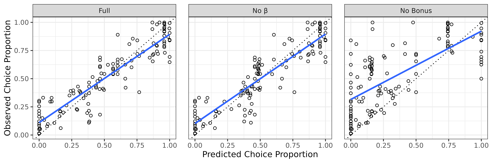

The SiGN R package comes with a simple function,
choice_mod_eval() that provides a suite of metrics for
evaluating the accuracy of model predictions against observed choice
behaviour. These include descriptive metrics such as root mean squared
error (RMSE), mean absolute error (MAE), mean bias, and concordance
measures.
For readers interested in more formal model comparison—including approaches that incorporate likelihoods—we refer them to the companion article, Model Evaluation: Information-Theoretic Statistics.
General Usage
To use the function, only two inputs are technically required: a vector of observed choice proportions and a vector of predicted choice proportions from the model.
choice_mod_eval(observed, predicted, k = 0, epsilon = 0.001, ...)The function can take some additional arguments k and
epsilon, but as these pertain to the information-theoretic
outputs, they are not considered here (see Information-Theoretic
Statistics).
When called, it returns a list containing three components:
$desc_stats: A data frame containing the descriptive fit metrics described below (e.g., mean bias, RMSE, MAE, CCC, etc.).$info_criteria: A data frame containing information-theoretic model comparison metrics (e.g., log-likelihood, AIC, BIC) based on a beta-distributed error model. These are discussed in detail in the companion article, Information-Theoretic Statistics.$residuals: A vector of residuals (i.e., observed minus predicted values), provided for convenience in case users wish to conduct additional analyses or visualizations.
Model Metrics
\(R^2\) (Coefficient of Determination)
Computed from the residuals of the predictive model (see Equation 1), not from a regression between predicted and observed values, this is intended to reflect the proportion of variance in the observed data accounted for by the model. However, some caution with this statistic is in order: Though commonly used for nonlinear models, this residual-based \(R^2\) lacks the clear “variance explained” interpretation it has in linear regression—and is not constrained to the [0,1] interval. This is why it is sometimes referred to as a type of pseudo-\(R^2\) when applied to non-linear models.
That said, because this pseudo-\(R^2\) is computed directly from the residuals of the model being evaluated, rather than from a secondary regression on the observed versus predicted values, it arguably offers a better heuristic for assessing model fit in this context. Still, even this form of \(R^2\) can be misleading in models with a nonlinear structure—like SiGN (e.g., Spiess & Neumeyer, 2010).
\[ \begin{equation} \tag{1} R^2 = 1 - \frac{\sum_i (y_i - \hat{y}_i)^2}{\sum_i (y_i - \bar{y})^2} \end{equation} \]
-
\(y_i\) is the observed choice
proportion for row \(i\) in
subopt_avian. - \(\bar{y}\) is the mean observed choice proportion.
- \(\hat{y_i}\) is the model-predicted choice proportion for row \(i\).
Mean bias
Mean bias captures the average directional error between predicted and observed values. It indicates whether the model systematically overpredicts or underpredicts on average: A positive mean bias indicates the model overpredicts on average. A negative mean bias indicates the model underpredicts on average. A value near zero implies that over- and underpredictions roughly cancel out—but this does not imply inaccuracy (only that the model is not consistently biased in one direction.). Note that, because over- and underpredictions can cancel each other out, mean bias does not reflect the magnitude of prediction errors. See Equation 2.
\[ \begin{equation} \tag{2} \text{Mean Bias} = \frac{1}{n} \sum_{i=1}^{n} \left( \hat{y}_i - y_i \right) \end{equation} \]
- \(n\) is the number of observations.
RMSE (root mean squared error)
RMSE measures the typical magnitude of prediction error by averaging the squared differences between predicted and observed values and taking the square root. Because the errors are squared, RMSE penalises larger errors more heavily, making it sensitive to outliers. The result is in the same units as the original data. See Equation 3.
\[ \begin{equation} \tag{3} \text{RMSE} = \sqrt{ \frac{1}{n} \sum_{i=1}^{n} \left( \hat{y}_i - y_i \right)^2 } \end{equation} \]
MAE (mean absolute error)
MAE also measures the average magnitude of prediction error but uses absolute differences rather than squared differences. Unlike RMSE, it treats all errors equally, making it more robust to outliers. Like RMSE, it is reported in the same units as the observed data. See Equation 4.
\[ \begin{equation} \tag{4} \text{MAE} = \frac{1}{n} \sum_{i=1}^{n} \left| \hat{y}_i - y_i \right|\end{equation} \]
Median Absolute Error
This metric provides a robust summary of typical prediction error by computing the median of the absolute differences between predicted and observed values. By relying on the median rather than the mean, this metric is extremely robust to outliers—though it may be less sensitive to smaller, systematic prediction errors than RMSE or MAE. See Equation 5.
\[ \begin{equation} \tag{5} \text{Median Absolute Error} = \text{median} \left( \left| \hat{y}_i - y_i \right| \right) \end{equation} \]
Lin’s Concordance Correlation Coefficient (CCC)
Lin’s CCC evaluates both the precision (how well predictions correlate with observations) and accuracy (how close they are to the 1:1 identity line). This makes it a more stringent measure of agreement than Pearson’s correlation alone. A CCC of 1 indicates perfect concordance (i.e., all points lie on the 1:1 line). A CCC of 0 indicates no concordance. Despite being bounded between –1 and 1 like Pearson’s correlation coefficient, the CCC is much more demanding. For instance, while a Pearson correlation of 0.5 might suggest a moderate association, a CCC of 0.5 typically reflects poor agreement, as it indicates not only imprecise predictions but also the low accuracy. Interpreting CCC values depends heavily on the domain and measurement context but, speaking very generally, CCC values above 0.9 are often considered strong, values between 0.7 and 0.9 suggest moderate agreement, and values below 0.7 indicate weak concordance—even if the corresponding Pearson correlation appears acceptable. See Equation 6.
\[ \begin{equation} \tag{6} \rho_c = \frac{2 \sigma_{xy}}{\sigma_x^2 + \sigma_y^2 + (\mu_x - \mu_y)^2} \end{equation} \]
- \(\rho_c\) is Lin’s Concordance Correlation Coefficient
- \(\sigma_{xy}\) The covariance of the predicted and observed values.
- \(\mu_x, \mu_y\) are the means of the predicted and observed values.
- \(\sigma_x, \sigma_y\) are the standard deviation of the predicted and observed values.
Note: By default, choice_mod_eval() computes CCC using
bias-corrected sample statistics. To match the uncorrected form shown in
Equation 6, set bias_correction = FALSE. See the
documentation for ccc() for more details.
Reassessing Dunn et al. (2024)
Background
To demonstrate a real-world use case of
choice_mod_eval(), we revisit the analysis from Dunn et
al. (2024), who evaluated the SiGN model using a curated subset of avian
suboptimal choice studies. This data set is included in the SiGN package
as subopt_avian.
In their original analysis, Dunn et al. reported \(R^2\) values based on the correlation between observed and predicted choice proportions. The logic was intuitive: if the model’s predictions align with the data, the correlation—and hence the \(R^2\)—should approach 1. Indeed, their scatterplot of observed versus predicted values showed a strong linear trend, with a slope near 1 and intercept near 0.
At first glance, this suggests excellent model performance. However, this approach reflects only the strength of linear association—it does not assess how well the predictions actually replicate the observed data, nor does it validate the model’s theoretical assumptions. In this context, a high correlation-based \(R^2\) may signal superficial agreement rather than meaningful fit.
A more appropriate alternative would have been to compute an \(R^2\) based on residual error from the predictive model itself (Kvålseth, 1985)—the version detailed in Equation 1 above. While this residual-based \(R^2\) also has limitations (as discussed earlier), it offers a more direct measure of predictive accuracy.
For these reasons, many researchers recommend placing greater weight on information-theoretic metrics such as the Akaike Information Criterion (AIC) or Bayesian Information Criterion (BIC), especially when comparing nonlinear models or models of differing complexity (Spiess & Neumeyer, 2010). These criteria provide more theoretically grounded assessments of model fit and penalise complexity in a principled way.
That said, it’s important to note that the SiGN model used by Dunn et al. was not fitted to the data in the conventional sense—it contained no free parameters. Predictions were generated solely from the predefined structure of the choice procedure, with no tuning to optimise fit. As a result, traditional model selection tools like AIC and BIC—which rely on maximised likelihoods and penalise model flexibility—are not strictly (or perhaps we should say, “easily”) applicable in this context.
Generating Predictions
Each row in subopt_avian represents a distinct condition
from a published study. Columns 9 through 24 correspond directly to
parameters required by the choice_params() function. (For
full details, consult the subopt_avian documentation.)
Each row in the subopt_avian data set represents a
distinct experimental condition from a published suboptimal choice
study. Columns 9 through 24 provide the parameters needed by the
choice_params() function (see the subopt_avian
documentation for full details).
library(SiGN)
names(subopt_avian)
#> [1] "row" "study" "year" "species"
#> [5] "exp" "condition" "n" "cp"
#> [9] "il_dur_a" "il_dur_b" "tl_dur_a1" "tl_dur_a2"
#> [13] "tl_dur_b1" "tl_dur_b2" "tl_p_a1" "tl_p_a2"
#> [17] "tl_p_b1" "tl_p_b2" "tr_p_a1" "tr_p_a2"
#> [21] "tr_p_b1" "tr_p_b2" "il_sched_a" "il_sched_b"
#> [25] "tl_sched_a1" "tl_sched_a2" "tl_sched_b1" "tl_sched_b2"
#> [29] "forced_exposure" "DOI" "ref" "data_version"As requested during peer review, Dunn et al. (2024) evaluated the standard SiGN model along with two simplified variants:
One with the \(\beta\) term removed, and
One without the bonus delay reduction mechanism.
The SiGN model’s \(\beta\) term
serves to adjust the trade-off between conditional and terminal
reinforcement, which are often in opposition inside suboptimal choice
procedures. Its influence is intended to be only a modest one. By
contrast, the bonus delay reduction is a core feature of the SiGN model
in suboptimal choice contexts. Removing it effectively reverts the model
to the earlier formulation proposed by Spetch & Dunn (1987), which
applies only to unsignalled procedures. As such, we expect the “no
bonus” model to perform poorly on the subopt_avian data
which is largely comprised of signalled procedures.
The following code reconstructs all three models and stores their
predictions—alongside the observed choice proportions—in a data frame
called preds.
# Construct model input list
params <- do.call(choice_params, as.list(subopt_avian[9:24]))
# Model 1: Full SiGN model predictions
full <- SiGN(params)$details
# Model 2: No beta model predictions
params$beta_toggle = FALSE
no_beta <- SiGN(params)$details
# Model 3: No bonus model (without bonus delay reduction term)
no_bonus <- (full$r_a * full$dr_avg_a) /
((full$r_a * full$dr_avg_a) + (full$r_b * full$dr_avg_b))
# Apply boundary conditions for model 3
cond_1 <- full$dr_avg_a > 0 & full$dr_avg_b < 0
cond_0 <- full$dr_avg_a < 0 & full$dr_avg_b > 0
no_bonus <- ifelse(cond_1 == TRUE, 1,
ifelse(cond_0 == TRUE, 0, no_bonus)
)
# Store observed and predicted values
preds <- data.frame(
cp_obs = subopt_avian$cp, # observed values
full = full$cp, # full model predictions
no_beta = no_beta$cp, # no beta model predictions
no_bonus = no_bonus # no bonus model predictions
)Calculating the Metrics
With predictions from each model stored in the preds
data frame, we can now evaluate model fit using the
choice_mod_eval() function. The results are stored in list
objects and printed via the $desc_stats element.
full <- choice_mod_eval(preds$cp_obs, preds$full)
no_beta <- choice_mod_eval(preds$cp_obs, preds$no_beta)
no_bonus <- choice_mod_eval(preds$cp_obs, preds$no_bonus)
full$desc_stats
#> n r_squared mean_bias rmse mae median_ae ccc
#> 1 128 0.7731154 0.001752848 0.1373015 0.1069909 0.08329606 0.9040602
no_beta$desc_stats
#> n r_squared mean_bias rmse mae median_ae ccc
#> 1 128 0.7641972 0.005173756 0.1399739 0.1103887 0.09257077 0.897469
no_bonus$desc_stats
#> n r_squared mean_bias rmse mae median_ae ccc
#> 1 128 -0.1356889 -0.1854011 0.3071867 0.2349005 0.1789208 0.5844115These outputs provide a quantitative summary of each model’s performance, which we interpret in the following section.
Conclusion
In this reanalysis, the \(R^2\) value for the full model (0.77) is slightly lower than the originally reported value of 0.84 (Dunn et al., 2024), as is the value for the no-\(\beta\) model (0.76 vs. 0.82). The no-bonus model shows the greatest discrepancy: while previously reported at 0.48, it now yields a negative \(R^2\) of -0.14, indicating that it performs worse than a null model that simply predicts the mean of the observed values. Although negative \(R^2\) values may seem counterintuitive, they can arise in the evaluation of nonlinear models, where \(R^2\) is no longer equivalent to the squared Pearson correlation coefficient. Dunn et al. had used a version of \(R^2\) based on linear regression, where that equivalence holds, which is why there is a discrepancy.
The mean bias values further distinguish the models: both the full and no-\(\beta\) models exhibit negligible bias—suggesting no systematic over- or underprediction—while the no-bonus model shows clear underprediction of choice proportions.
The RMSE and MAE metrics reinforce these patterns. For the full and no-\(\beta\) models, average prediction errors fall within approximately 10–14 percentage points, indicating reasonably good fit. In contrast, the no-bonus model exhibits substantially larger errors, with deviations averaging upwards of 30 percentage points. Additionally, the discrepancy between the mean and median absolute error for the no-bonus model also suggests that outliers are a problem for it.
The CCC offers a complementary perspective. Both the full and no-\(\beta\) models show strong concordance between predicted and observed values (0.904 and 0.897), whereas the no-bonus model’s CCC (0.584) reflects substantially poorer agreement, consistent with its performance on the other metrics.
Taken together, these results support the interpretation offered in Dunn et al. (2024): the inclusion of the \(\beta\) term yields modest but consistent improvements in predictive accuracy. While its effect is small, this is consistent with its intended role as a fine-tuning mechanism rather than a core driver of choice behaviour. Thus, its limited impact should not be taken as evidence against its theoretical relevance.
Visual Summary
The plot below shows predicted versus observed choice proportions for each model, along with fitted regression lines and the 1:1 identity line for reference.
library(tidyverse)
# Convert to long/tidy format
preds_long <- preds |>
pivot_longer(
cols = c(full, no_bonus, no_beta),
names_to = "model",
values_to = "cp_pred"
) |>
# Factor data and re-label
mutate(model = factor(model,
levels = c("full", "no_beta", "no_bonus"),
labels = c("Full", "No β", "No Bonus")
))
ggplot(preds_long, aes(x = cp_pred, y = cp_obs)) +
geom_abline(intercept = 0, slope = 1, linetype = 3) +
geom_point(shape = 1, stroke = 0.5) +
geom_smooth(method = "lm", se = FALSE) +
facet_wrap(~model) +
labs(
x = "Predicted Choice Proportion",
y = "Observed Choice Proportion"
) +
theme_bw() +
theme(panel.spacing.x = unit(1.125, "lines"))
Further Reading
While the present vignette focuses on descriptive fit metrics (e.g.,
\(R^2\), RMSE, MAE, CCC), the
choice_mod_eval() function also returns
information-theoretic outputs via the $info_criteria
element. These include log-likelihoods, AIC, and BIC values based on a
beta-distributed error model—tools that are especially useful for model
comparison and formal model selection.
For a detailed discussion of these likelihood-based methods, including theoretical justification and examples, see the companion vignette:
References
Dunn, R. M., Pisklak, J. M., McDevitt, M. A., & Spetch, M. L. (2024). Suboptimal choice: A review and quantification of the signal for good news (SiGN) model. Psychological Review. 131(1), 58-78. https://doi.org/10.1037/rev0000416
Kvålseth, T. O. (1985). Cautionary Note about R2. The American Statistician, 39(4), 279–285. https://doi.org/10.2307/2683704
Spetch, M. L., & Dunn, R. M. (1987). Choice between reliable and unreliable outcomes: Mixed percentage-reinforcement in concurrent chains. Journal of the Experimental Analysis of Behavior, 47 (1), 57–72. https://doi.org/10.1901/jeab.1987.47-57
Spiess, A.-N., & Neumeyer, N. (2010). An evaluation of R2 as an inadequate measure for nonlinear models in pharmacological and biochemical research: a Monte Carlo approach. BMC Pharmacology, 10(1), Article 6. https://doi.org/10.1186/1471-2210-10-6